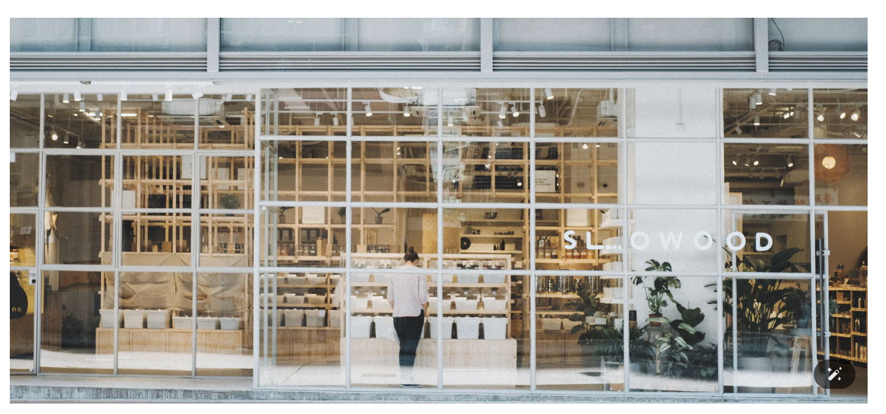

Content & Research
Content analysisAudience insightCompetitor researchContent planning support
Digital Marketing & Content Analytics Portfolio
Communication and New Media graduate working with social content, audience signals and visual reporting to support content marketing decisions.

public signals → content insight → content actions
A public-data-based content strategy project for a Hong Kong sustainable lifestyle retailer.
Social media content audit · Xiaohongshu search insight · Competitor content reference · Content gap diagnosis · Platform content planning · Content prototypes
View Project
A content analytics workflow using RED post examples, engagement signals and headline pattern review to support faster headline ideation.
RED content review · Headline patterns · Engagement signals · Prompt rules · A/B test planning
View ProjectA text analysis project based on public comments from international media platforms.
Text cleaning · Sentiment analysis · Word frequency analysis · Audience response summary · Visual reporting